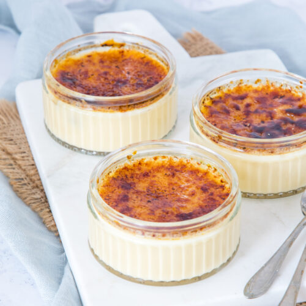

Crème brûlée
Een lekker recept voor een boterzachte crème brûlée met een krokant suiker laagje.
Ingredienten
- 600 ml slagroom
- 1 vanillestokje
- 125 gram suiker
- 8 eierdooiers
- 4 ovenvaste schaaltjes
Bereidingswijze
- Snijd het vanillestokje in de lengte open en schraap met de punt van een mes het merg eruit. Breng de slagroom met
het merg en het vanillestokje tegen de kook aan. Neem de pan van het vuur, leg de deksel erop en laat de room 15
min. trekken.
- Verwarm de oven voor tot 140 °C. Vis het vanillestokje uit de room.
- Klop met een garde 4/5 deel van de suiker door de eidooiers. Schenk al kloppend de vanilleroom door een zeef
bij de eidooiers. Zet de schaaltjes in de ovenschaal en schenk de vanilleroom in de schaaltjes.
- Vul de ovenschaal met warm (niet kokend) water tot max. halverwege de schaaltjes. Dek losjes af met
aluminiumfolie.
- Bak de crèmes 50-55 min. in de oven, tot ze net stevig voelen. Neem de schaaltjes uit de ovenschaal en laat ze
afkoelen tot kamertemperatuur. Zet de afgekoelde crèmes minimaal 2 uur in de koelkast om door en door koud te
worden.
- Bestrooi met de resterende suiker. Karamelliseer de suiker met de crème bruléebrander en serveer direct.
